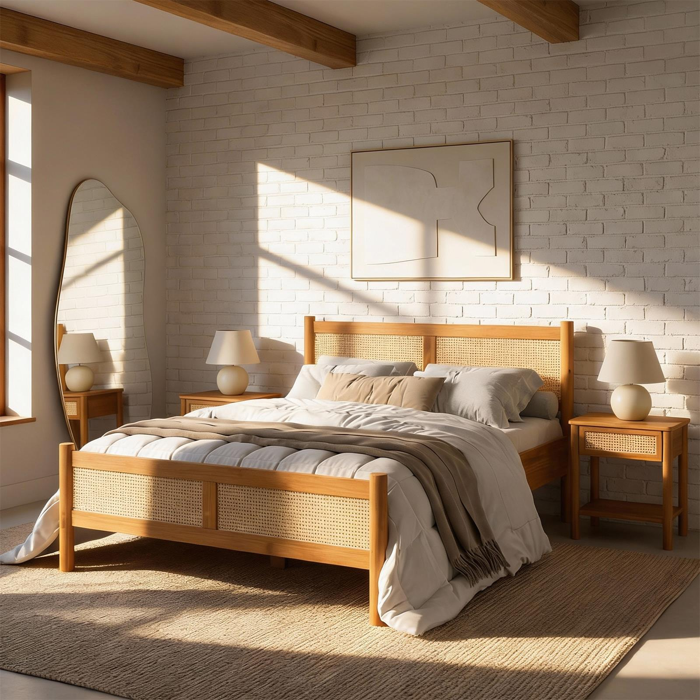

Quarto adulto
Como escolher uma cama de madeira maciça.
Estrutura, proporção e durabilidade são critérios tão importantes quanto o desenho.
Escolher uma cama de madeira maciça é uma decisão de longo prazo. O móvel precisa sustentar rotina, peso, movimento, conforto visual e coerência com o quarto.
Comece pela estrutura
Observe base, apoios, encaixes e estabilidade. Uma boa cama transmite firmeza antes mesmo de ser usada.
Considere proporção e circulação
A cama domina visualmente o quarto. Altura, largura, cabeceira e mesas de apoio precisam conversar com o espaço disponível.
Durabilidade depende de uso e manutenção
Madeira maciça pode durar muito, mas precisa de cuidado adequado: limpeza suave, atenção à umidade e proteção contra exposição excessiva.